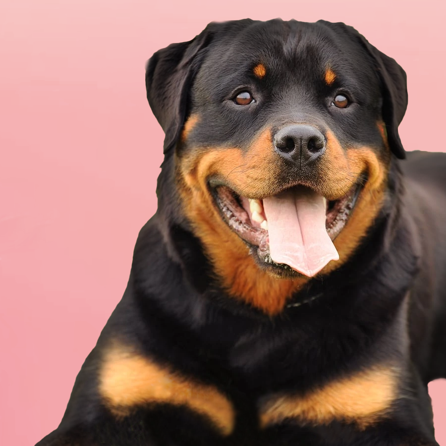
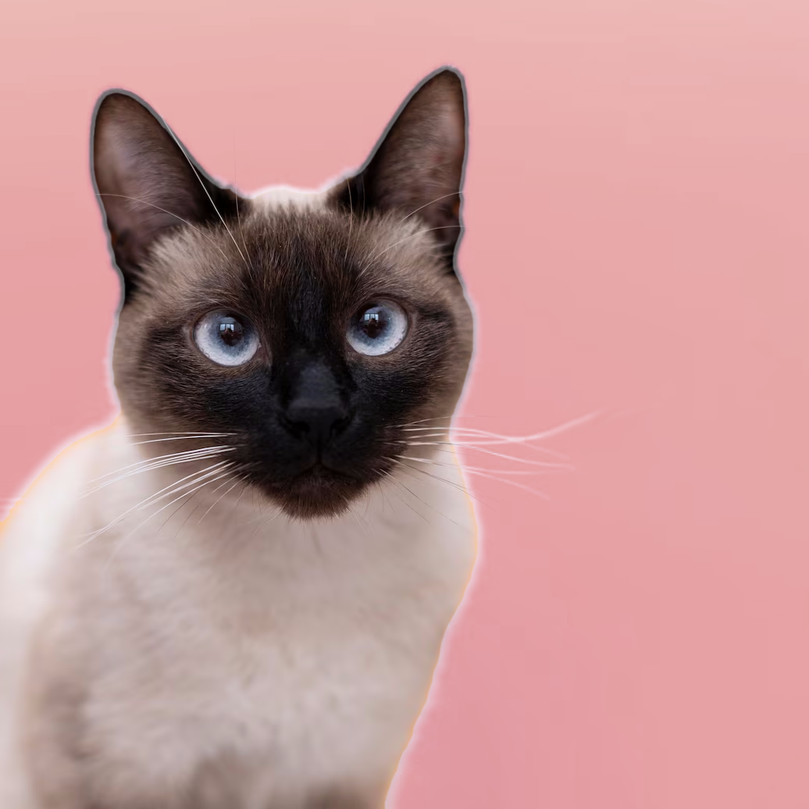

🏠 Da una oportunidad y alegra tu hogar 🏠
✨ Sobre nosotros
En Segunda Oportunidad, creemos que cada vida merece un nuevo comienzo. Somos un centro de adopción dedicado al rescate, cuidado y reubicación de mascotas en situación de abandono o vulnerabilidad. Desde nuestros inicios, trabajamos con el corazón para brindar a perros y gatos la atención médica, alimentación y cariño que necesitan para recuperarse y encontrar un hogar definitivo donde puedan ser amados y respetados.

🐾 Conoce a Nuestros Rescatados
En Segunda Oportunidad trabajamos todos los días para rehabilitar a mascotas que fueron víctimas de abandono o maltrato. Aquí te presentamos a algunos de nuestros rescatados que pronto estarán listos para encontrar un hogar lleno de amor.

❓ Preguntas Frecuentes
